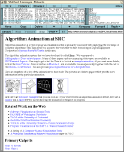

Leading-edge Web browsers are moving toward this goal by including features for handling e-mail and newsgroups. For instance, Netscape Navigator includes both a mail reader and a news reader. However, each reader appears in a separate top-level window, and the readers are only loosely integrated with the Web browser: the only connection to the Web browser is that when a mail message or news article contains a URL, the URL is "active." That is, the user can click on the URL, causing Navigator to fetch the page and display it in its Web browser window.
Leading-edge mail and news readers are also moving toward this goal by making URLs in messages active and by allowing mail messages and news articles to reference Web pages as MIME attachments. As a MIME attachment, the text part of the mail message or news article is shown in the standard fashion, and clicking on the "attachment" button invokes an external Web browser that displays the attached Web page. Once the Web browser is running, however, it is completely independent of the mail or news reader that invoked it.
This report describes WebCard, a mail/news reader (think of it as a
combination of xmh and xrn) that has been enhanced to
handle Web pages using the same interface that is already used
for handling mail messages and news articles. The user interface is
based on folders, which can contain mail messages, news articles, and
also Web pages. The obvious use of folders is for organizing
material, as is done in conventional e-mail and news readers using
folders, and in Web browsers using bookmarks or hotlists.
In WebCard, however, folders can contain an arbitrary mix of mail
messages, news articles, and Web pages. WebCard also uses folders to
present the mail messages, news articles, and Web pages returned by
the "search" command, and to present the Web pages returned by the
"auto surf" command.
WebCard was made available to the SRC community in the spring of 1995. At that time, no other system existed that provided integrated e-mail, news, and Web browsing. (In fact, at that time, Navigator could send, but not receive e-mail, and could read, but not post to newsgroups.) Two systems have recently been announced that appear to integrate e-mail and news with Web browsing much like WebCard: Cyberdog [2] from Apple and the Other Browser [7] from Pixelogic.
At any given time one message from the open folder, called the selected message, is shown in the display pane of the WebCard window. The corresponding line in the table of contents is highlighted. Clicking on a different line, or using the up and down arrow buttons, changes the selected message. The user can respond to the selected message, forward it, copy or move it to the selected folder, and so on. (Actually, more than one message can be selected, but some operations, like "Reply," are only valid when there is a single selected message.) Users can also perform standard folder operations, such as creating, renaming, and deleting folders.
WebCard handles newsgroups in the same way: a folder whose name refers to a newsgroup contains the articles in that group. Users can respond to a news article, copy articles to the selected folder, and so on. The primary difference between a newsgroup folder and any other folder is that newsgroup folders are read-only: users cannot delete messages from, or copy messages into, a newsgroup folder. \linebreak WebCard uses the name of the folder to distinguish between newsgroup folders and ordinary folders; a period in the folder name indicates a newsgroup. The Andrew Messages System [1] is the only non-Web browser we know of that deals uniformly with e-mail and newsgroups.
WebCard is also a Web browser: Web pages are displayed in the display pane that normally shows the contents of a message. There are three ways to bring up a Web page: by clicking on a URL that appears in the currently selected mail message or news article (see Figure 2); by typing the URL into a dialog box that is opened by left-clicking the "WWW" button; and by selecting a URL in an arbitrary window (e.g., by highlighting it with the mouse) and then middle-clicking the "WWW" button. Once a Web page is displayed, clicking on a link fetches the associated page, which then replaces the existing page in WebCard's display pane.
Whenever WebCard displays a Web page, the menu bar displayed at the top of the display pane changes to contain "Back," "Forward," and "Stop" buttons, and a pull-down menu labeled "WWW." The "Back" and "Forward" buttons traverse the chain of Web pages that have been visited. For instance, when the screen dump was captured in Figure 3, a total of sixteen Web pages had been visited, and the user issued the "Back" command twice. The "Stop" button cancels any retrievals in progress, and the "WWW" menu contains a variety of Web-oriented commands, such as "Auto Surf," described later.
The Web page currently displayed in the display pane can be added to the selected folder. When a page is added to a folder, the folder's table of contents shows an entry for the page. The date field is the date the page was added to the folder; the URL of the Web page is shown in place of the sender field of mail messages, and the Web page's title replaces the subject field.
Once in a folder, Web pages can be moved or copied to another folder just like any mail message or news article. The only mail/news operation that doesn't make sense for a Web page is "Reply."
Folders provide a convenient way for users to organize material. For example, a user can keep the home pages of all his or her colleagues together in a folder named "Colleagues," or keep all pages, news articles, and e-mail messages about the Boston Red Sox in a folder named "Bosox." The advantage of WebCard folders over bookmarks in conventional Web browsers is that WebCard folders can also contain mail messages and news articles. And the advantage of WebCard folders over folders in conventional email or news readers is that WebCard folders can also contain Web pages.
WebCard uses folders to return the results of certain operations. For example, the search command creates a new folder containing all items in the open folder that contain a specified string. A more innovative use of folders is for the "Auto Surf" command, which traverses every link on a particular Web page and returns all resulting pages in a new folder (see Figure 3). The retrieved pages can be traversed conveniently just by clicking on the up and down arrow buttons. The functionality of the "Auto Surf" command is now available in a variety of "offline Web browsers," such as Open Market's OM-Express [6].
WebCard allows users to detach the display pane, making it a separate pane (called a detached pane) in the WebCard window and causing a new display pane to appear. Detached panes can be deleted when no longer needed, and there can be an arbitrary number of them. This feature allows a page to remain visible for an extended period of time, even while following another chain of links in the display pane. This use of detached panes is similar to opening a new Web browser window in conventional browsers.
Another use of detached panes is to make it easier to explore lists of links, often found on home pages (see Figure 4 and Figure 5). When clicking a link in the detached pane, the new Web page appears back on the display pane rather than obscuring the item in the detached pane. Without a detached pane, the user would need to issue the "Back" command after each link was visited. Netscape's frames are often used to achieve this same goal. The advantage of WebCard's approach is that the user, not the content provider, is in control. That is, the user can choose to detach any page and can decide when to remove it.
We do not claim that WebCard is the correct way to browse the Web, to organize material on the Web, to integrate mail and news, or even to integrate mail/news with Web browsing. Discovering and quantifying the strengths and weaknesses of the approach introduced by WebCard are challenges for the future.
|
|
Figure 1. This screen dump shows WebCard displaying the author's inbox. The open folder is "inbox," and the selected folder is "Zippers." The selected message, seen in the display pane, contains two URLs: one refers to the Zeus home page and the other to the sender's home page. |
|---|---|
|  | Figure 2. This screen dump is the result of clicking on the URL referring to the Zeus home page in the e-mail message shown in Figure 1. |
| Figure 3. This screen dump is the result of issuing the "Auto Surf" command from the Zeus home page in Figure 2. The links are retrieved and stored in the folder named "--Surf--", which is automatically opened after issuing the command. Thus, all links on the Zeus home page can be explored by simply using the up and down arrow keys to change the selected message. | |
| Figure 4. This screen dump is the result of clicking on the "Detach" button when viewing the Zeus home page in Figure 2. The WebCard window now has a display pane (middle) and a detached pane (bottom). Initially, the display pane and the detached pane both show the same page. Clicking on links in either pane will cause a new page to be displayed in the display pane. In particular, because clicking on links in the detached page does not obscure the page, a typical use of detached panes is for displaying an index page (e.g., a home page) with many links. | |
| Figure 5. This screen dump is the result of scrolling the page in the detached pane (bottom) in Figure 4, and then clicking on the leftmost icon. The new page is retrieved and displayed in the display pane (middle). |
http://www.cs.cmu.edu/afs/cs.cmu.edu/Web/People/AUIS/ams.html
http://cyberdog.apple.com/
http://gatekeeper.dec.com/pub/DEC/SRC/research-reports/SRC-135a.html
Published as:
http://gatekeeper.dec.com/pub/DEC/SRC/research-reports/SRC-141a.html
Published as:
http://www.research.digital.com/SRC/modula-3/html/home.html
http://www.openmarket.com/express/
http://www.theother.com/
{kind=link}
{kind=link}
{kind=link}
{kind=link}